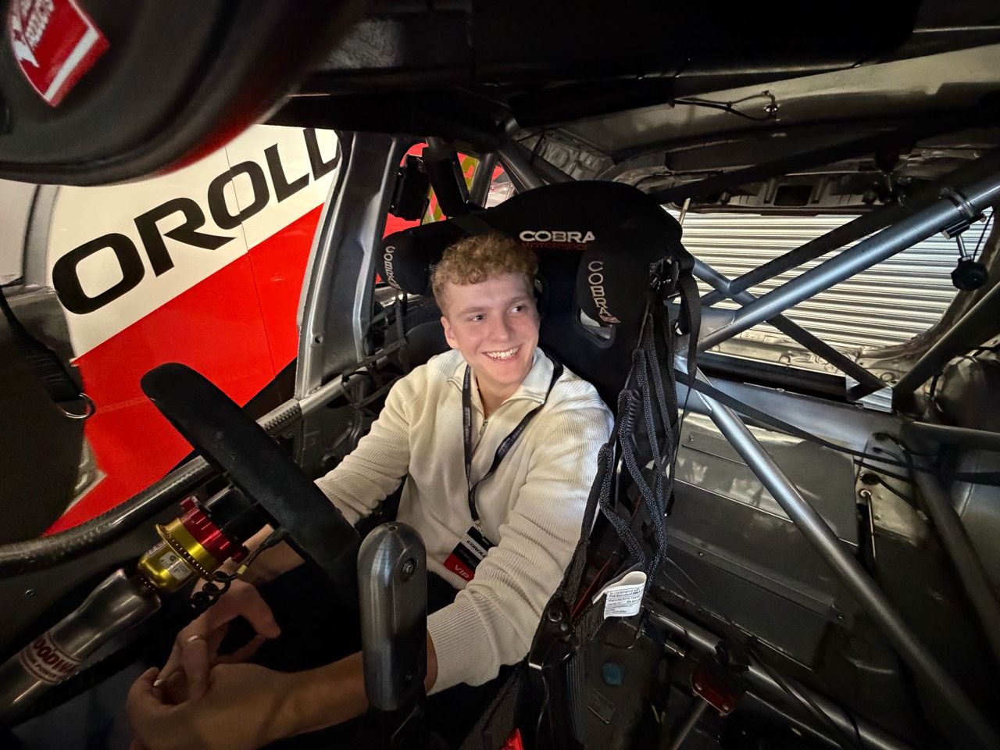

Student. Future engineer. Motorsport ambition.Discover more ↓
01 / INTRODUCTIONTHE PERSON BEHIND THE NAME

Hello, I’m Oli.
Turning a passion into a profession.
I’m studying BEng (Hons) Motorsport Engineering at the University of Derby and looking for a 2027–28 industrial placement. I’m particularly interested in race engineering and vehicle performance.
My university work spans driver comparison in MoTeC, component modelling in SolidWorks, MATLAB programming and workshop manufacture. I enjoy connecting analysis with practical engineering.
STUDYINGBEng (Hons) Motorsport Engineering
BASED ATUniversity of Derby · Year 2
NEXT STEPA 2027–28 industrial placement
02 / THE PORTFOLIOANALYSIS. DESIGN. HANDS-ON ENGINEERING.
Learning by doing.
Selected university work, from comparing racing lines to designing and making components.
The full portfolio
Projects, practical work, education and training in one short PDF.
Working with other students, I measured corner weights, wheelbase and tyre rollout on a Radical SR1 for a centre-of-gravity exercise.
I also completed practical sessions in engine component measurement, wind-tunnel testing and small-engine dynamometer testing.
Radical SR1
Wind tunnel
Dynamometer
02 / ECU & data logging
Connecting systems and data.
I configured a start-up tune in TunerStudio and tested it on an ECU bench board. I also worked on logger and CAN configuration in Cosworth Toolset.
Our lecturer tested the dashboard configuration on the university’s Formula Student car.
TunerStudio
Cosworth Toolset
CAN configuration
03 / THE FOUNDATIONSLEARNING. APPLYING. PROGRESSING.
Building the foundations.
Engineering study, independent training and experience working with people.
01
Education / Current
University of Derby
BEng (Hons) Motorsport Engineering · Year 2
Seeking a 2027–28 industrial placement, with interests in race engineering, vehicle performance and data-led decisions.
02
Independent learning
Training & development
CompletedMATLAB Onramp and the MySolidWorks CSWA Exam Prep Course.
In progressSimulink Onramp.
PlannedCSWA exam in January 2027.
03
Education / St Albans School
Maths, physics & computing
A levels in Mathematics, Further Mathematics and Physics. I also studied part of the Computer Science A-level course, covering Python, data theory and HTML.
GCSE grade 9 in Computer Science, Mathematics, Physics and Biology.
04
Other experience
Working with people
I’ve tutored GCSE maths and science one-to-one, completed student representative training at Derby and worked as a delivery driver alongside university.
05
Further information
The full picture
Download my engineering portfolio, or get in touch to request my CV.